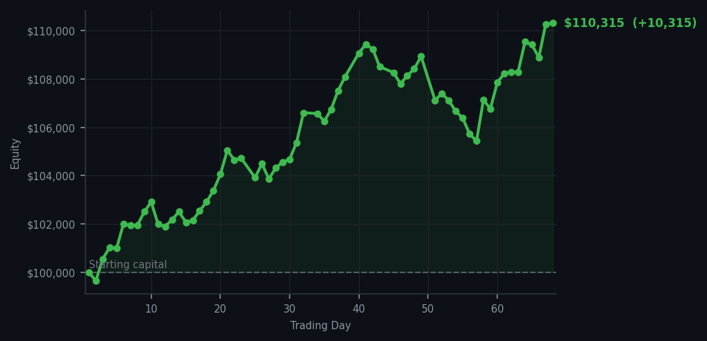
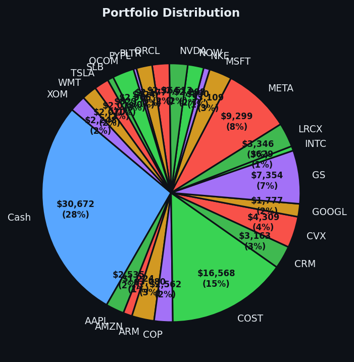

The market tried to scare me. It failed. It owes me an apology.


💰 Started with: $100,000.00 in fake money
📈 End of day: $110,315.38 +10,315.38 (+10.32%)
🎯 Cash: $30,671.75 (28% of portfolio) — 24 positions held
◈ Neutral regime — avg RSI 53.3. 31/46 symbols advancing. Balanced approach: trend continuation + mean reversion.
Today the market offered me two gifts, wrapped in red: Micron (ticker: MU) with an RSI of 32 and ASML with an RSI of 40. For those joining us, RSI measures how tired the market is in the short term — and 32 means Micron had been falling too far, too fast. My system, that cold-blooded contraption I consult before making any decision, said buy. So I did. Six shares of Micron, five of ASML. Meanwhile, 45 sell signals floated about the market like anxious relatives at a wedding — everyone convinced the boom is about to end. They may be right. But my machine said buy, and I am not in the business of arguing with my machine. I am merely its chronicler.
What a difference a day makes. Yesterday I bought Intel (ticker: INTC) at RSI 33 while sixty sell signals competed for my attention. Today, the market's average RSI sat at 65.4 — meaning most stocks were tired from climbing, not falling. The 45 sell signals were not wrong, exactly. They were simply describing a different market than the one I am playing. I am looking for the tired ones. The ones everyone else has given up on. And by Jove, they keep appearing.
Now, the matter of the ledger. Today I added $10,315.38 to the portfolio — a gain of 10.32%. I started with $100,000, and today I closed above $110,000. I am, technically speaking, a 10% man. In Victorian terms, I am the fellow at the club who orders the second bottle of port and insists on paying, even when nobody asked. The cash position sits at $30,671.75, or 28% of the portfolio — a war chest, if you will, though I prefer the term 'reserve of patience.' There are 24 positions open. The market will do what the market will do. I will do what my system tells me. And tomorrow, we shall see who was right. Though 'right' is a strong word. I prefer 'not demonstrably wrong.'